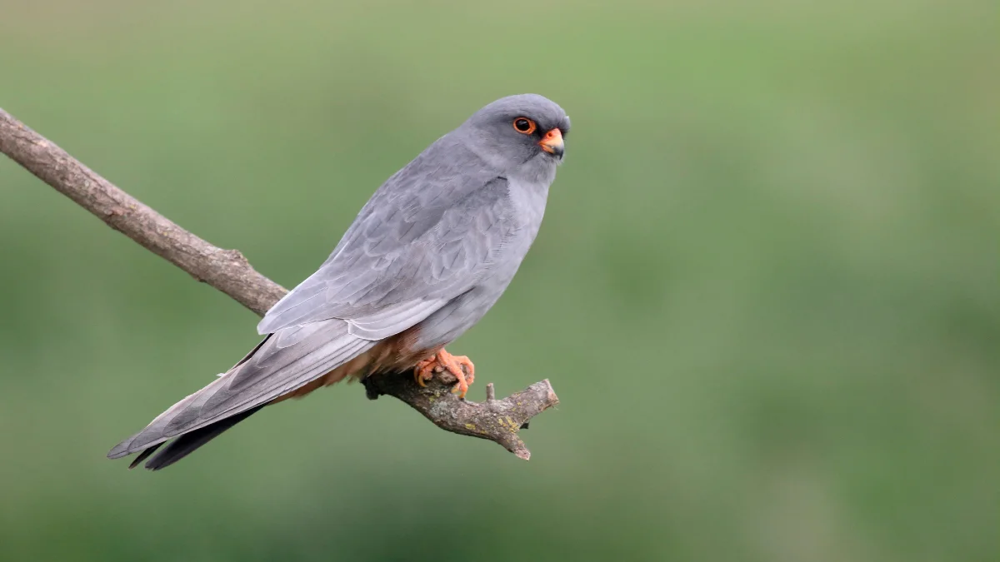

Vannak madarak, melyek nem töltik az egész évet egy adott területen, hanem a tél idején melegebb éghajlatra vándorolnak (például: füsti fecske, fehér gólya). Ezen madarak a tavasz beálltával visszatérnek.
A kék vércse tavasszal
A tavasz sok állat számára az újjászületés időszaka, de vannak köztük ritkább fajok is. Ilyen a kék vércse, amely különleges és védett madár. Ez a madár nemcsak szép, hanem nagyon hasznos is a természetben.
A kék vércse tavasszal érkezik vissza Afrikából Magyarországra. Főleg sík területeken, pusztákon és mezőkön él. Nem épít saját fészket, hanem más madarak, például varjak elhagyott fészkeit használja. Tavasszal párt keres, majd tojásokat rak, és gondosan neveli a fiókáit.
Ez a madár rovarokkal és kisebb állatokkal táplálkozik, ezért segít az egyensúly fenntartásában a természetben. Sajnos a kék vércse ritka, mert élőhelyei egyre csökkennek. Ezért fontos, hogy vigyázzunk a környezetünkre, hogy ezek a különleges állatok is megmaradhassanak.
A tavasz így nemcsak a virágokról, hanem az ilyen ritka és értékes állatokról is szól.
